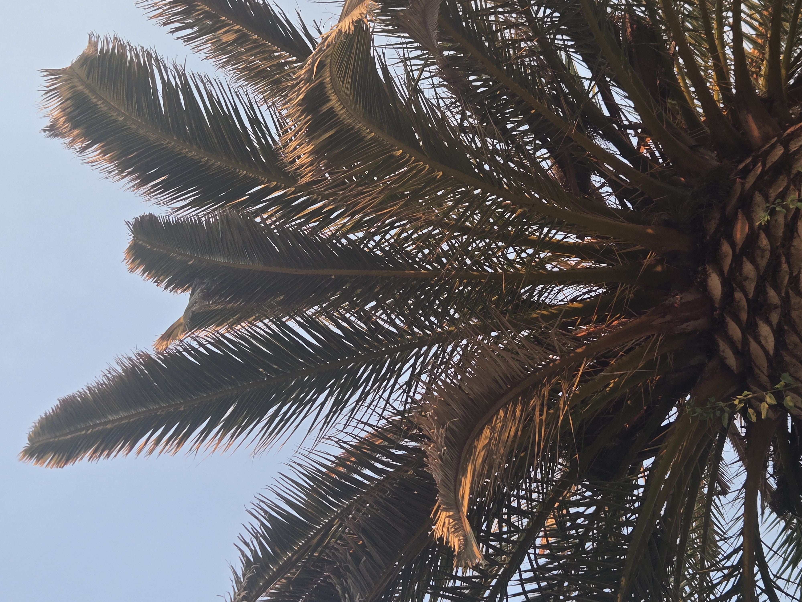

This field note follows my own mature Canary Island date palm in Old Escondido. I began watching it closely after South American palm weevil was first mentioned to me about 5-6 months ago and someone suggested this CIDP might be affected.


Since that first concern was raised, the palm has been treated twice. I have also caught adult palm weevil activity on or around this palm, so the situation deserves attention. At the same time, this is not a final diagnosis or a claim that the palm is saved, cured, doomed, or beyond help.
The important nuance is that the crown has shown decline symptoms, but the palm has not rapidly collapsed. Its condition has appeared relatively stable for months, which makes continued monitoring and documentation more useful than a rushed conclusion based on one photo or one moment in time.
Mature Canary Island date palms in Old Escondido and across San Diego County can carry real landscape, shade, and neighborhood character value. When there is concern about SAPW, decline, irrigation stress, age, disease, or a combination of factors, careful observation can help property owners make more informed preservation or removal decisions.
This entry is part of SDPP's broader mature palm stewardship and Old Escondido palm documentation work: regular checks, photo records, and calm evaluation before assuming the outcome of a high-value palm.